Overview
What Vectolyn is and the three ideas the identity is built on.
Vectolyn is an open source toolkit for running your own Minecraft network. VectolynCloud starts and watches the servers; plugins, templates and a resource pack come with it. Operators meet the brand on GitHub and in the console, players meet it in the server list and the tab list.
- Built from blocks
- The mark is drawn on an 8 by 8 grid, the type is Pixelify Sans on a 7-row pixel grid, corners are square and shadows are hard offsets. Everything could be built in the game.
- Two signals
- Cyan stands for the software, gold for the network and the player's spawn point. Both sit on obsidian. No third accent color, no gradients on the mark.
- Exact in game
- In-game views are built to the client's own metrics: advance widths, shadows, GUI scale. Where a value is not verified, the page says so next to the image.
The mark
A V built from eight by eight blocks, with a gold block below it: the spawn point of the network.
One mark, one construction: a V built from whole blocks on an 8 by 8 grid, with the gold block below it. It is drawn the same way at every size, from the 16 px favicon to the 3D key art, always on whole pixels.
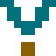
16 pxshape-rendering="crispEdges" and no resampling.Minimum sizes
| Asset | Minimum | Below that |
|---|---|---|
| Mark alone | 16 px | Do not use; there is no smaller drawing. |
| Lockup | 32 px mark height | Use the mark alone and set the name as text (case 3). |
| Pixelify Sans headline | 22 px | Use Atkinson Hyperlegible Next 700. |
Wordmark and lockups
Pixelify Sans 700, outlined, with the mark as its first letter.
The wordmark is Pixelify Sans at weight 700, outlined to paths. Its capitals are seven font pixels tall, and the V body of the mark is drawn to the same height, so the mark can stand in for the V. Letters are one font pixel apart (tracking -0.0286 em). VECTOLYN and CLOUD form one word: the same one-pixel gap, separated only by color.
Three ways to write the name
| Case | When | How |
|---|---|---|
| 1. Mark as initial | The mark sits directly before the name: lockups, headers, banners, the tab list with our resource pack | The mark is the V. Write [mark]ECTOLYN, [mark]ECTOLYN.NET, [mark]ectolynCloud. Never the mark followed by a full VECTOLYN. |
| 2. Mark on its own | Favicon, app icon, server icon, avatar, the 3D mark in a banner, the stacked lockup | The mark stands as a symbol. If the name follows, it is spelled in full, at least 4 units away (two gold blocks) and centered on the mark. |
| 3. Text only | No mark available: plain text, chat, the MOTD, console lines, the ASCII banner, documentation | Full name, no mark: VECTOLYN, VECTOLYN.NET, VectolynCloud. |
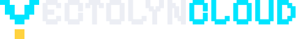
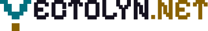
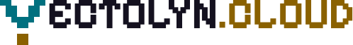
ectolynCloud
ectolynCloud
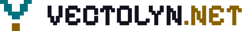
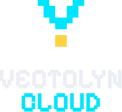
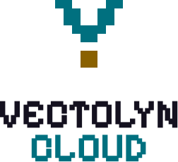
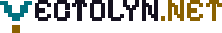
Color
Two signals on obsidian. Cyan is the product, gold is the network.
Status and secondary
| Role | Dark | Light | Contrast dark / light |
|---|---|---|---|
| Success | #5BD98A | #17703A | 10.4 / 5.6 |
| Warning | #FFB547 | #8A5300 | 10.6 / 5.8 |
| Error | #FF6B6B | #B42318 | 6.7 / 6.0 |
| Muted text | #9EA3B8 | #4B5263 | 7.4 / 7.2 |
Contrast is WCAG 2.2 against the surface of each theme. Every value lives in tokens.json and tokens.css.
Typography
Pixelify Sans for the name and headlines, Atkinson Hyperlegible Next for reading, JetBrains Mono for typing.
Pixelify Sans is the brand typeface. It sets the wordmark, the headlines on banners and the headings of this page, always at weight 700. Its letters sit on a pixel grid of seven rows, the same height as the body of the V. Atkinson Hyperlegible Next carries body text and UI, because it separates I, l and 1, and O and 0, which matters for addresses and version numbers. JetBrains Mono is for anything you type. All three are under the SIL Open Font License; self-host them on the website.
Pixelify Sans on the pixel grid
One font pixel is 0.09143 em. At 22, 33, 44, 66 and 88 px it lands on 2, 3, 4, 6 and 8 screen pixels, so the steps stay sharp. From 33 px up, track it to -0.0286 em: the letters are then exactly one font pixel apart, as in the wordmark. In artwork the type is outlined to paths, never scaled from a bitmap.
d5 88pxd4 66pxd3 44pxd2 33pxd1 22pxText scale, Atkinson Hyperlegible Next
4xl 49px3xl 39px2xl 31pxxl 25pxlg 20pxmd 16pxsm 14pxxs 12pxjava -jar VectolynCloud.jar
docker pull ghcr.io/vectode/vectolyn-cloud:0.2.0Space, shape, depth
A 4 px grid, square corners and hard shadows, like blocks.
space.1space.2space.3space.4space.5space.6space.7space.8space.9space.10Radius and elevation
Every radius is 0. Depth comes from hard offsets, never from soft blur. The one exception is glow: it belongs to light sources, the 3D mark and keyboard focus.
Pixel rules and icons
How pixel art stays sharp on every screen.
- Whole-number scaling only. Pixel art is shown at 1x, 2x, 3x or 4x with
image-rendering: pixelated. Never at 1.5x, never smoothed. - Draw on the grid. Every edge of the mark, the server icon and pixel icons sits on a whole pixel. SVGs carry
shape-rendering="crispEdges". - No rotation, no perspective for flat pixel art. Depth comes from stepped offsets, as in the 64 px server icon.
- Icons. UI icons use a 16 by 16 grid with 2 px strokes, square ends and no curves. One color per icon: text color, cyan for active, gold only for the network. No emoji.
- Pixelify Sans at 22, 33, 44, 66 or 88 px, where one font pixel lands on whole screen pixels.
- 3D is the exception. The Cycles renders show the same construction as an object; they may be scaled freely, but they never replace the flat mark in small sizes.
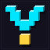
In game
Every view is built in GUI pixels and scaled only by whole numbers. Each one says what is exact and what is not.
Fidelity notes for every view below
- Glyph shapes are our own redraw of the game font (no Mojang file). Advance widths follow the font's advance table, so widths and centering are exact even where a glyph's look is approximate.
- » « • ■: advances 7, 7, 3 and 5 as drawn; the shape of all four and the advance of ■ are not verified in a client.
- Ping icon: own 5-bar redraw. A screenshot of a current Java client shows a wedge-shaped icon instead; not yet checked against a client without resource packs.
- Modern clients: layout numbers taken as equal to 1.8.9 (decompiled), cross-checked against a client screenshot at GUI scale 3 (entry 915 px wide = 305 x 3). Not checked in the 26.x source.
Each figure lists only what is specific to it.
Server list
Our entry between placeholder networks, selected. Line 1 carries the brand and the version range, line 2 the news. Both lines are centered with counted spaces, the way networks do it.
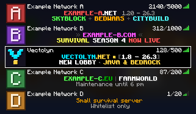
GUI scale 3
GUI scale 2
Exact
- Entry 305 x 36 on a 36 px pitch; icon 32 x 32 (the 64 x 64 PNG at half size, so at GUI scale 2 it shows 1:1)
- Name at x+35, y+1 in white; MOTD lines at x+35, y+12 and y+21; wrap width 271
- Player count right-aligned at 305 - width - 17, y+1; ping icon at x+290
- Selection: 1 px frame around the entry (white while focused), black fill, content inset 2 px
- Bold = glyph drawn twice 1 px apart, +1 px advance; shadow +1/+1 in (rgb & 0xFCFCFC) >> 2
- Centering: leading spaces (4 px) counted against a 270 px area
Approximated or unverified
- Text shadow and count colors (white digits, gray slash) measured on a screenshot of a current client
- Background: own blurred landscape in place of the title panorama, darkened to match a client screenshot
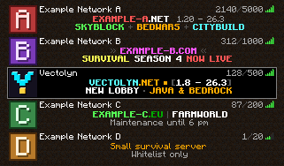
Exact
- Same geometry as above (1.8.9 GuiSlot / ServerListEntryNormal)
- No text shadow: 1.8.9 draws the list with drawString(..., false)
- Selection frame gray #808080 with black fill
- Count as §7 online §8/ §7 max; MOTD colors as § codes (§b, §6)
Approximated or unverified
- Background: own dark tiled noise in place of the dirt texture
- This legacy MOTD is planned for our own proxy plugin (stage 3) and not built yet. Until then Velocity downsamples the modern MOTD via Adventure, so cyan shows as §3 (dark aqua); not tested
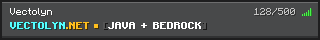
Exact
- MOTD as § codes in Bedrock color values from minecraft.wiki (§b #54FFFF, §p #FFBF1E, §8 #545454)
Approximated or unverified
- Row layout, sizes and colors of the Bedrock server list are an approximation; no client was measured
- Bedrock shows motd1 below the server name; the sub-MOTD (line 2) only appears locally, per a comment in Geyser's source. Not tested on a device
- Font: same redraw as Java (Bedrock uses Mojangles); coverage of » « • ■ on Bedrock is not verified
# Velocity (templates/Proxy/velocity.toml), MiniMessage, two centred lines.
# Centred with the font's advance table: area 270 px, space 4 px, bold +1 px per glyph.
# Line 1: 161 px -> 14 spaces; line 2: 166 px -> 13 spaces.
motd = " <#00E5FF><bold>VECTOLYN</bold><#FFD23F><bold>.NET</bold><#FFD23F> ■ <dark_gray><bold>[</bold><white><bold>1.8 - 26.3</bold><dark_gray><bold>]</bold>\n <white><bold>NEW LOBBY</bold><dark_gray> • <#FFD23F><bold>JAVA & BEDROCK</bold>"
# Java 1.8 to 1.15 (no hex colours): planned as a separate MOTD from our own proxy plugin (stage 3),
# § codes, same centring. Until then these clients get the MOTD above, which Velocity downsamples
# via Adventure: cyan becomes §3 (dark aqua).
motd-legacy-1: " §b§lVECTOLYN§6§l.NET§6 ■ §8§l[§f§l1.8 - 26.3§8§l]"
motd-legacy-2: " §f§lNEW LOBBY§8 • §6§lJAVA & BEDROCK"
# Legacy proxy (templates/Legacy-Proxy/velocity.toml), MiniMessage, same centring. Only Java 1.8 to 1.8.9
# reaches it (PandaSpigot 1.8.8 backends, no ViaVersion): no Bedrock, and named 1.8 colours instead of hex.
# Line 1: 164 px -> 13 spaces; line 2: 135 px -> 17 spaces.
motd = " <aqua><bold>VECTOLYN</bold><gold><bold>.NET</bold><gold> ■ <dark_gray><bold>[</bold><white><bold>1.8 - 1.8.9</bold><dark_gray><bold>]</bold>\n <white><bold>LEGACY SERVERS</bold><dark_gray> • <gold><bold>JAVA</bold>"
# Geyser (plugins/Geyser-Velocity/config.yml), Bedrock § codes, not centred.
# Bedrock shows motd1 in the server list; per a Geyser source comment the sub-MOTD only shows locally.
primary-motd: "§b§lVECTOLYN§p§l.NET§p ■ §8§l[§f§lJAVA + BEDROCK§8§l]"
secondary-motd: "§f§lNEW LOBBY§8 • §p§lJAVA & BEDROCK"
Tab list, as configured today
This is the list players see now: the TAB plugin with the config shipped in the server templates. Placeholders are filled with example values.
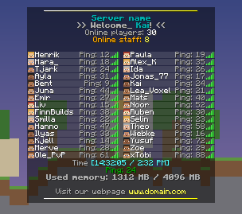
Exact
- Lines, colors and placeholders from templates/*/plugins/TAB/config.yml (design default) and animations.yml
- Sorting from scoreboard-teams: GROUPS owner, admin, mod, helper, builder, vip, default, then A-Z
- PlayerTabOverlay: at most 20 rows per column, column width min(o * (9 + name + score + 13), width - 50) / o, 5 px gap, list from y 10, header and footer wrapped at width - 50 and centered
- Background 0x80000000; rows 8 px on a 9 px pitch with 0x20FFFFFF; heads 8 x 8; ping icon at x + width - 11
- playerlist-objective: 1.20.3+ shows the fancy value (gray Ping: n), older clients a yellow number
- Strikethrough: 1 px line at y+3.5 from x-1 (modern) or y+3 (1.8), with shadow
Approximated or unverified
- Heads: placeholder faces; skins are player data
- World: own flat drawing; screen 640 x 360 GUI px (1920 x 1080 at GUI scale 3)
- Example values: 30 players, 8 staff, ping 24, memory 1312 / 4096 MB, 14:32:05
- Animations: a frame of the typing effect is shown (Welcome_), time and web lines static
- LuckPerms prefixes are not set in the repo, so names show plain white (groups only change the order)
- 1.8: TAB's RGB to § conversion assumed as nearest color; the trailing empty header line is dropped (String.split) on 1.8 and kept on modern clients (not verified)
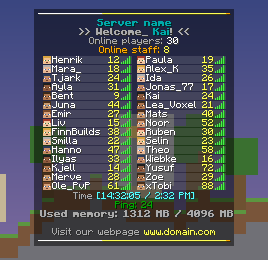
Exact
- Lines, colors and placeholders from templates/*/plugins/TAB/config.yml (design default) and animations.yml
- Sorting from scoreboard-teams: GROUPS owner, admin, mod, helper, builder, vip, default, then A-Z
- PlayerTabOverlay: at most 20 rows per column, column width min(o * (9 + name + score + 13), width - 50) / o, 5 px gap, list from y 10, header and footer wrapped at width - 50 and centered
- Background 0x80000000; rows 8 px on a 9 px pitch with 0x20FFFFFF; heads 8 x 8; ping icon at x + width - 11
- playerlist-objective: 1.20.3+ shows the fancy value (gray Ping: n), older clients a yellow number
- Strikethrough: 1 px line at y+3.5 from x-1 (modern) or y+3 (1.8), with shadow
Approximated or unverified
- Heads: placeholder faces; skins are player data
- World: own flat drawing; screen 640 x 360 GUI px (1920 x 1080 at GUI scale 3)
- Example values: 30 players, 8 staff, ping 24, memory 1312 / 4096 MB, 14:32:05
- Animations: a frame of the typing effect is shown (Welcome_), time and web lines static
- LuckPerms prefixes are not set in the repo, so names show plain white (groups only change the order)
- 1.8: TAB's RGB to § conversion assumed as nearest color; the trailing empty header line is dropped (String.split) on 1.8 and kept on modern clients (not verified)
Tab list, Vectolyn branding
The same structure in our colors, with the full footer. This is the design the cloud's own plugin will send later; until then it works as a TAB design.
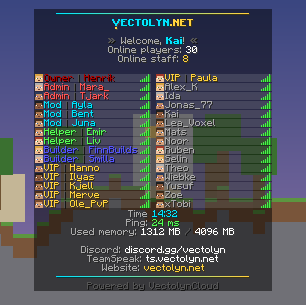
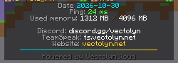
Exact
- Same layout rules as the TAB list above; same structure of lines
- Footer complete: time/date animation (both frames shown), ping, used memory, Discord, TeamSpeak, website, powered-by line last in dark gray
Approximated or unverified
- Mark glyph U+E000 replaces the V of VECTOLYN (8 x 10, V body on the 7 px cap height, gold block as a 3 px descender). Needs our resource pack (bitmap font provider, Java 1.13+); without it, write VECTOLYN in full. The descender reaches 1 px into the next line; check in game
- Addresses vectolyn.net, discord.gg/vectolyn, ts.vectolyn.net are examples
- 1.8 variant: hex gradient replaced by a dark gray rule, cyan/gold by §b/§6, no glyph
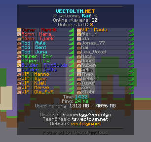
Exact
- Same layout rules as the TAB list above; same structure of lines
- Footer complete: time/date animation (both frames shown), ping, used memory, Discord, TeamSpeak, website, powered-by line last in dark gray
Approximated or unverified
- Mark glyph U+E000 replaces the V of VECTOLYN (8 x 10, V body on the 7 px cap height, gold block as a 3 px descender). Needs our resource pack (bitmap font provider, Java 1.13+); without it, write VECTOLYN in full. The descender reaches 1 px into the next line; check in game
- Addresses vectolyn.net, discord.gg/vectolyn, ts.vectolyn.net are examples
- 1.8 variant: hex gradient replaced by a dark gray rule, cyan/gold by §b/§6, no glyph
Tab list on Bedrock Planned, stage 3
Vanilla Geyser shows Bedrock players no tab header or footer today; it drops the packet. Stage 3 adds a Vectolyn tab list for Bedrock (own plugin plus a Bedrock resource pack with JSON UI, or a Geyser extension). This is the target design, not current behavior.
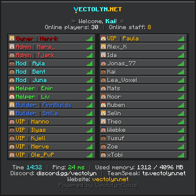
Exact
- Bedrock color values from minecraft.wiki; Bedrock has no strikethrough, so rules are drawn as UI lines
Approximated or unverified
- Target design, not current behavior: vanilla Geyser ignores the tab header/footer packet
- Planned for stage 3 (own plugin plus Bedrock resource pack JSON UI or a Geyser extension)
- Panel look modeled on Bedrock's UI (gray panels, dark border, light top edge); sizes are a proposal
# TAB design with Vectolyn branding (MiniMessage, components.minimessage-support: true).
# Addresses are examples. \uE000 is the mark glyph (U+E000) and replaces the V of VECTOLYN; use it only once
# the resource pack provides it. Without the pack, write the name in full (VECTOLYN.NET). Never \uE000 followed by VECTOLYN.
# The last footer line is the powered-by line; it follows branding.powered-by (default true) in cloud.yml.
# config.yml
header-footer:
designs:
vectolyn:
header:
- "<gradient:#00E5FF:#FFD23F><st> </st></gradient>"
- "<white>\uE000<#00E5FF><bold>ECTOLYN</bold><#FFD23F><bold>.NET</bold>"
- ""
- "<dark_gray><bold>» </bold><gray>%animation:VectolynWelcome% <#00E5FF><bold>%player%</bold><gray>!<dark_gray><bold> «</bold>"
- "<gray>Online players: <white>%online%"
- "<gray>Online staff: <#FFD23F>%staffonline%"
- ""
footer:
- "%animation:VectolynTime%"
- "<gray>Ping: <green>%ping% ms"
- "<gray>Used memory: <white>%memory-used% MB<dark_gray> / <white>%memory-max% MB"
- ""
- "<gray>Discord: <white>discord.gg/vectolyn"
- "<gray>TeamSpeak: <white>ts.vectolyn.net"
- "<gray>Website: <#FFD23F>vectolyn.net"
- "<gradient:#00E5FF:#FFD23F><st> </st></gradient>"
- "<dark_gray>Powered by VectolynCloud"
placeholders:
time-format: "HH:mm"
date-format: "yyyy-MM-dd"
# animations.yml
VectolynWelcome:
change-interval: 400
texts:
- "W"
- "We"
- "Wel"
- "Welc"
- "Welco"
- "Welcom"
- "Welcome"
- "Welcome,"
- "Welcome,"
- "Welcome,"
- "Welcome,"
- "Welcome,"
- "Welcome,"
- "Welcome,"
VectolynTime:
change-interval: 3000
texts:
- "<gray>Time <#00E5FF>%time%"
- "<gray>Date <#00E5FF>%date%"
/version and the powered-by line
On by default, switchable for other operators (branding.powered-by: true in cloud.yml). It appears as the last tab footer line and in /version, never in the MOTD, broadcasts or scoreboards. English is the default; other languages follow the client where VectolynCloud offers a language choice.
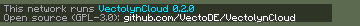
Exact
- Chat width 320, word wrap, 9 px lines, black background at 50 %, text with shadow
Approximated or unverified
- World: placeholder color
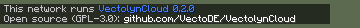
Exact
- Link is not clickable on Bedrock (Geyser documentation)
Approximated or unverified
- Chat UI of Bedrock approximated; Geyser's hex-to-code mapping not tested
Language option, German. Shown only where a player or operator picked German.
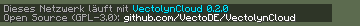
Tab footer in German: Läuft mit VectolynCloud.
Console at startup
Exactly the format of StartupReport: the banner on standard output, then one log line per step as HH:mm:ss LEVEL message. Values are examples. Plain ASCII, 68 columns wide; a narrow 55-column version is in console-banner.txt.
__ __ _ _ ____ _ _
\ \ / /__ ___| |_ ___ | |_ _ _ __ / ___| | ___ _ _ __| |
\ \ / / _ \/ __| __/ _ \| | | | | '_ \| | | |/ _ \| | | |/ _` |
\ V / __/ (__| || (_) | | |_| | | | | |___| | (_) | |_| | (_| |
\_/ \___|\___|\__\___/|_|\__, |_| |_|\____|_|\___/ \__,_|\__,_|
|___/
VectolynCloud 0.2.0 | Java 21.0.5 (Eclipse Adoptium) | Windows 11 amd64
Home: C:\vectolyn
10:15:02 INFO [1/5] Configuration ok 9 groups, 9 tasks, node node-1
10:15:03 INFO [2/5] Database ok mariadb on 127.0.0.1:3307
10:15:05 INFO [3/5] Software ok lobby: paper 26.3 + 6 plugins; proxy: velocity 26.3 + 5 plugins
10:15:05 INFO [4/5] Templates ok 2 written (Lobby-Server, Proxy), 0 present, for 2 wanted server(s)
10:15:06 INFO [5/5] Services ok 2 of 2 started
10:15:06 INFO lobby-1 starting port 30001, static
10:15:06 INFO proxy-1 starting port 25565, static
Imagery and 3D
The mark as a physical object, rendered in Blender Cycles on the GPU. Type is set on top as vector paths.
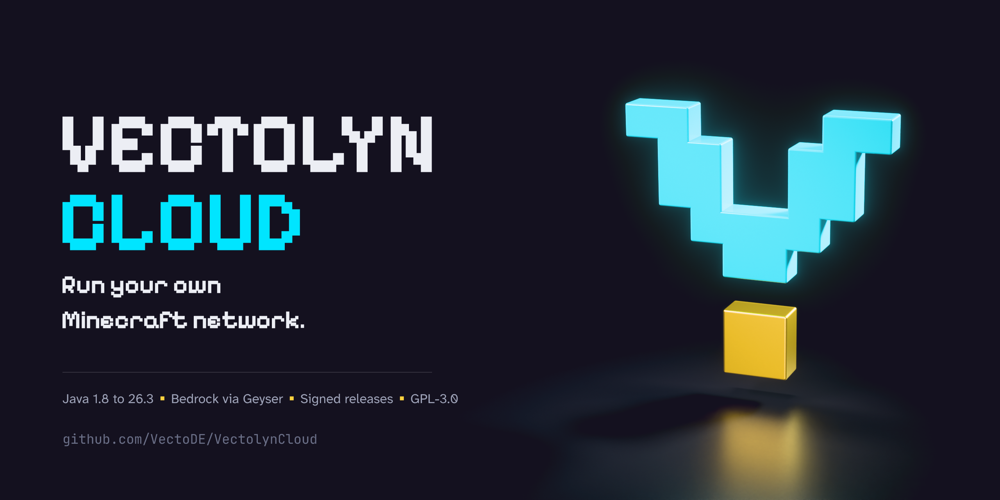
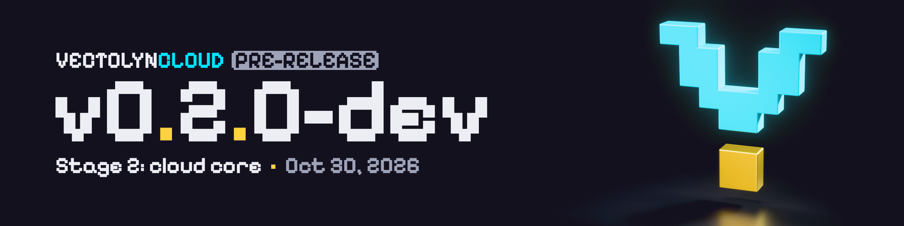
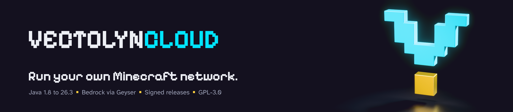
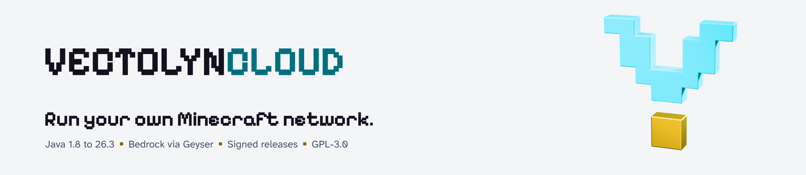
<picture>
<source media="(prefers-color-scheme: dark)" srcset="branding/png/readme-header-dark@2x.png">
<img alt="VectolynCloud" src="branding/png/readme-header-light@2x.png" width="1280">
</picture>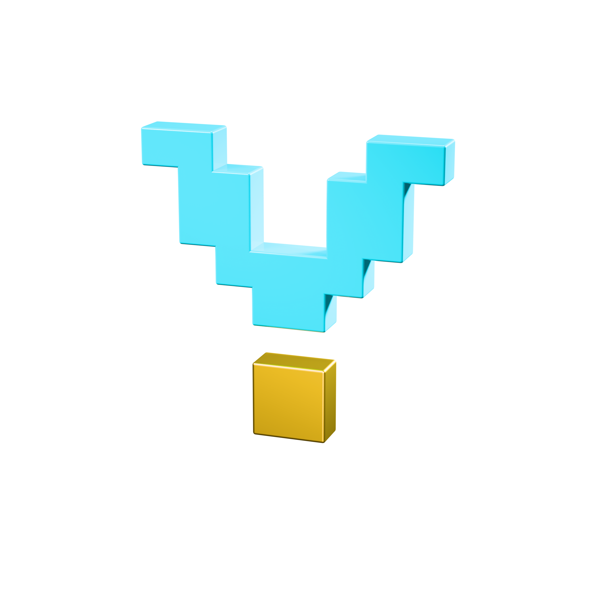
Release banner system
One background, rendered once. Per release only the type and the badge change.
CI builds the banner for every tag from three inputs: the version, the first line of the tag message as the title, and the date. Everything is set in Pixelify Sans 700 and outlined to paths, on top of png/release-banner-background.png (1280 x 320, and 2560 x 640 as @2x).
| Slot | Type | Color | Rule |
|---|---|---|---|
| wordmark | u 3 (cap 21 px) | #ECEEF4, CLOUD #00E5FF | VECTOLYNCLOUD as one word, top of the block |
| badge | u 3, padding 2u x 1u | text #14111F on the badge color | 12 px after the wordmark, centered on its cap height; corners cut by one font pixel |
| version | u 12, then 10, 8, 6 | #ECEEF4, points of MAJOR.MINOR.PATCH #FFD23F | The largest size that fits the 780 px text column |
| title | u 3 | #ECEEF4 | Max 48 characters, cut at a word end with an ellipsis; shortened further word by word if title and date exceed 780 px. Empty: line holds only the date |
| date | u 3 | #9EA3B8 | English, "Oct 30, 2026", after a 6 x 6 gold square |
Badges follow the version suffix: -dev[.N] PRE-RELEASE in gray #9EA3B8, -alpha[.N] ALPHA in red #FF6B6B, -beta[.N] BETA in gold, -rc[.N] RC in cyan, -lts LTS in green #5BD98A (the success color, 10.4:1 with the obsidian text). Stable versions carry no badge. Versions below 1.0.0 are released only as -dev; any other suffix is not a release tag and stops the release. The block of wordmark, version and title line is centered vertically, so a smaller version size keeps the balance. Template with named slots: release-banner-template.svg; all values: release-banner-spec.json.

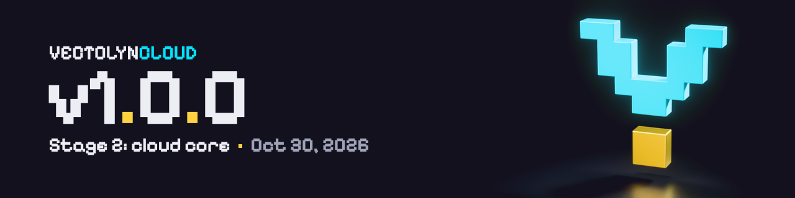
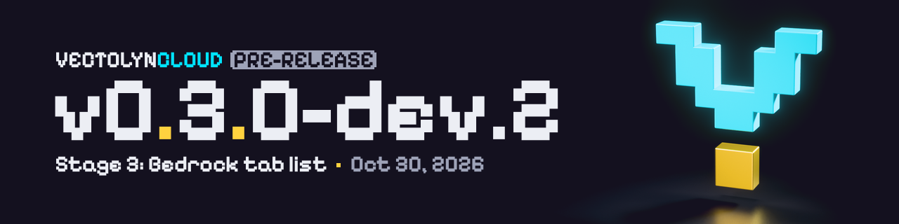
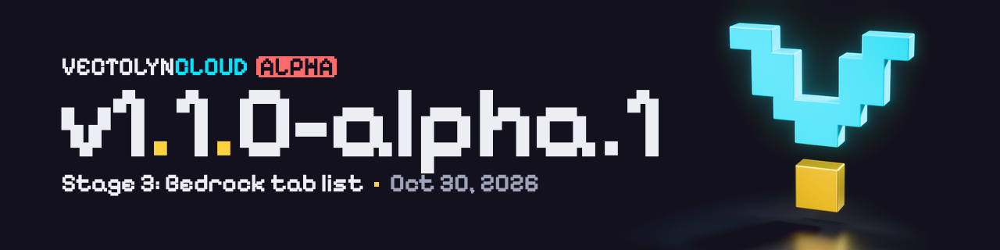
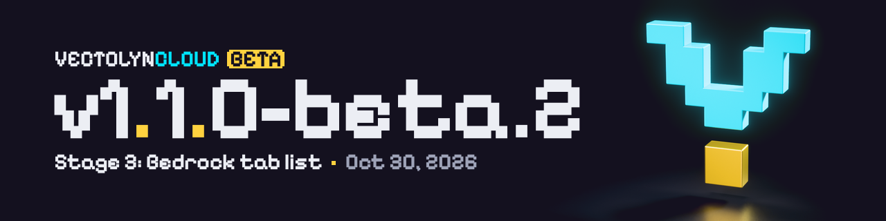
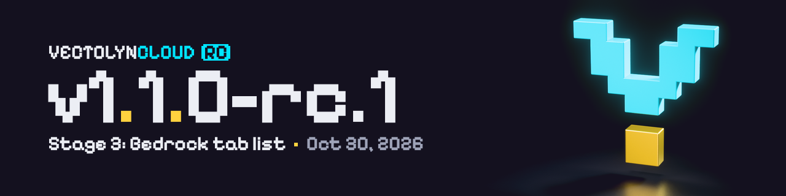
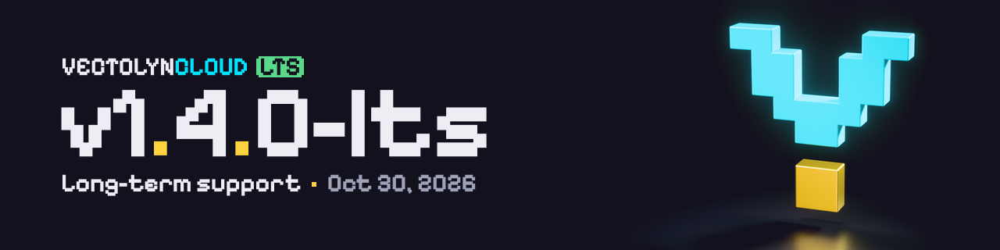
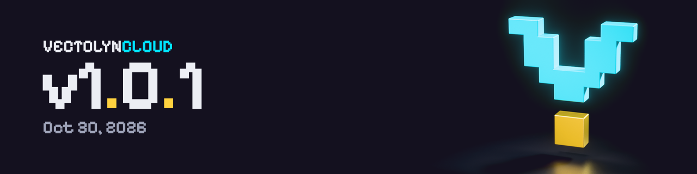
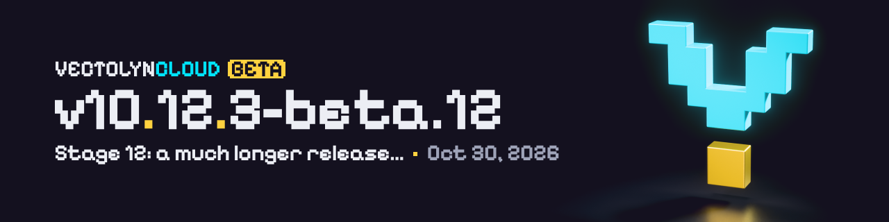
Writing
English by default. Other languages only where VectolynCloud offers a choice.
| Where | Write | Avoid | Rule |
|---|---|---|---|
| Product | VectolynCloud | Vectolyn Cloud, Vectolyncloud, Vectolyn-Cloud | One word, two capitals. No article: “VectolynCloud starts the services.” |
| Brand, toolkit | Vectolyn | VECTOLYN in running text | “Vectolyn is an open source toolkit”: cloud, plugins, templates, resource pack and website together. |
| Network in game | VECTOLYN.NET | Vectolyn.Net, vectolyn.NET | Display only: MOTD, scoreboard title, tab list, signs. VECTOLYN.CLOUD where the cloud is the topic. The suffix, dot included, is always gold. |
| Address | vectolyn.net | VECTOLYN.NET in links | Lowercase, and only once the domain exists. |
| Wordmark | VECTOLYNCLOUD (artwork, two colors) | a space between VECTOLYN and CLOUD | One word; color separates the parts. In text it stays VectolynCloud. |
| File | VectolynCloud.jar | vectolyncloud.jar, VectolynCloud-0.2.0.jar | Same pattern as today's jar. |
| Technical names | vectolyn-cloud | vectolynCloud, vectolyn_cloud | ghcr.io/vectode/vectolyn-cloud, vectolyn-cloud.service, Java packages net.vectolyn.cloud.*, repo github.com/VectoDE/VectolynCloud. |
| Console | VectolynCloud 0.2.0 | Vectolyn Cloud v0.2.0 | First info line: name, space, version without “v”. |
| Versions | 1.8 to 26.3 | 1.8–26.3 in running text | In the MOTD “1.8 - 26.3” with an ASCII hyphen; old clients may not render the en dash. |
| Editions | Java and Bedrock | Java Version, MCPE | “JAVA & BEDROCK” only in the MOTD, where space is short. |
Voice and tone
Network to players
- Short, present tense, second person. Say what is happening and where to go.
- Use the words players use: lobby, mode, round, portal.
- Capitals only in the MOTD and on signs, never whole chat sentences.
- Errors say what happened and how long it takes.
- The new lobby is open. The portal on your right leads to Survival.
- Survival is restarting. You will be back in about 30 seconds.
- Experience the ultimate next-gen gaming adventure!
- Oops! Something went wrong :(
Cloud to operators
- Second person, as in the README. Action first, reason second.
- Commands, paths and ports verbatim, set as code.
- Numbers instead of adjectives: “starts in about 20 seconds”.
- Vectolyn ships code, not hosting. Never write as if we run a network.
- Run java -jar VectolynCloud.jar. On first start the wizard asks for the port, the database and the servers you want.
- MariaDB does not answer on 127.0.0.1:3306. Check the service with systemctl status mariadb.
- Seamlessly scale your network with powerful cloud orchestration.
- An unexpected error occurred.
Not verified
Open points before wider public use.
- Trademark: “Vectolyn” has not been searched at DPMA, EUIPO or WIPO. Have a lawyer check it before wider public use.
- Domains: vectolyn.net, vectolyn.cloud and vectolyn.com returned 404 on RDAP on 2026-10-30, so they were probably unregistered at that moment. Nothing is registered yet.
- In-game views: advances, colors, bold and shadow follow fixed rules; glyph shapes are our redraw. Photograph Java 26.x, Java 1.8.9 and Bedrock once and compare before release.
- Symbols » « • ■ on Java 1.8 and Bedrock: coverage and exact shapes not checked in a client.
- Resource-pack glyph U+E000 (the mark): Java bitmap provider from 1.13; Bedrock glyph pages; not built or tested yet.
- 3D renders: Cycles with Khronos PBR Neutral; colors on screen are close to, not equal to, the flat brand hex values.
Downloads
Everything in branding/. Regenerate with branding/tools/gen_v3.py, render_all.sh and export_v3.py (see branding/tools/README.md).
Brand assets
- console-banner.txt
- lockup-stacked-dark.svg
- lockup-stacked-light.svg
- lockup-symbol-vectolyn-net-dark.svg
- lockup-symbol-vectolyn-net-light.svg
- lockup-symbol-vectolyncloud-dark.svg
- lockup-symbol-vectolyncloud-light.svg
- lockup-vectolyn-cloud-dot-dark.svg
- lockup-vectolyn-cloud-dot-light.svg
- lockup-vectolyn-cloud-dot-mono-black.svg
- lockup-vectolyn-cloud-dot-mono-white.svg
- lockup-vectolyn-net-32-dark.svg
- lockup-vectolyn-net-32-light.svg
- lockup-vectolyn-net-dark.svg
- lockup-vectolyn-net-light.svg
- lockup-vectolyn-net-mono-black.svg
- lockup-vectolyn-net-mono-white.svg
- lockup-vectolyncloud-32-dark.svg
- lockup-vectolyncloud-32-light.svg
- lockup-vectolyncloud-dark.svg
- lockup-vectolyncloud-light.svg
- lockup-vectolyncloud-mono-black.svg
- lockup-vectolyncloud-mono-white.svg
- mark-mono-black.svg
- mark-mono-white.svg
- mark-on-dark.svg
- mark-on-light.svg
- motd.txt
- release-banner-spec.json
- release-banner-template.svg
- server-icon-64.svg
- tab-vectolyn.yml
- tokens.css
- tokens.json
- png/social-preview.png (+@2x)
- png/release-banner-v0.2.0-dev.png (+@2x)
- png/release-banner-background.png (+@2x)
- png/readme-header-dark.png (+@2x)
- png/readme-header-light.png (+@2x)
- png/keyart-3840x2160.png (+.jpg, 1920 x 1080 .jpg)
- png/mark-3d-2048.png (+512)
- png/server-icon.png
- png/favicon-48.png
- png/apple-touch-icon.png
- png/favicon-16.png
- png/favicon-32.png
- video/mark-turntable.mp4
- video/mark-turntable.webm


In-game views
- mc-chat-version-bedrock.svg
- mc-chat-version-de.svg
- mc-chat-version.svg
- mc-serverlist-bedrock.svg
- mc-serverlist-java.svg
- mc-serverlist-java18.svg
- mc-tablist-tab-java.svg
- mc-tablist-tab-java18.svg
- mc-tablist-vectolyn-bedrock-planned.svg
- mc-tablist-vectolyn-java-date.svg
- mc-tablist-vectolyn-java.svg
- mc-tablist-vectolyn-java18.svg
- png/mc-chat-version-bedrock.png (GUI scale 2, @2x = 4)
- png/mc-chat-version-de.png (GUI scale 2, @2x = 4)
- png/mc-chat-version.png (GUI scale 2, @2x = 4)
- png/mc-serverlist-bedrock.png (GUI scale 2, @2x = 4)
- png/mc-serverlist-java.png (GUI scale 2, @2x = 4)
- png/mc-serverlist-java18.png (GUI scale 2, @2x = 4)
- png/mc-tablist-tab-java.png (GUI scale 2, @2x = 4)
- png/mc-tablist-tab-java18.png (GUI scale 2, @2x = 4)
- png/mc-tablist-vectolyn-bedrock-planned.png (GUI scale 2, @2x = 4)
- png/mc-tablist-vectolyn-java-date.png (GUI scale 2, @2x = 4)
- png/mc-tablist-vectolyn-java.png (GUI scale 2, @2x = 4)
- png/mc-tablist-vectolyn-java18.png (GUI scale 2, @2x = 4)